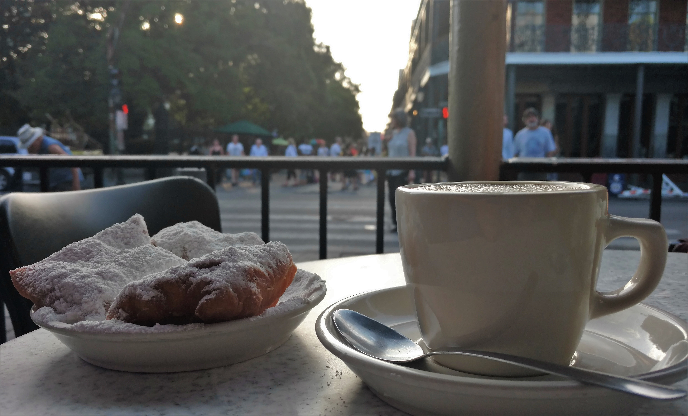
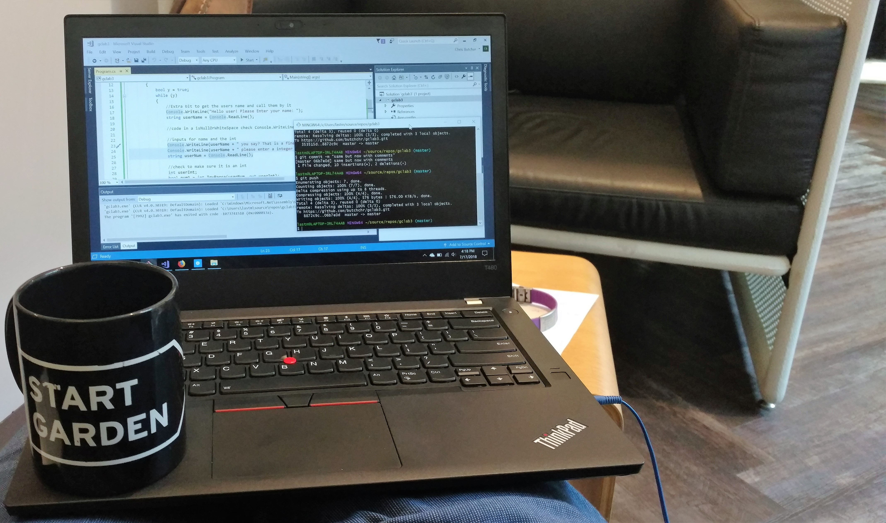

Hello, I am Chris Butcher a .NET Developer. When I started this lab assignment I had
much higher hopes for this webzone and it turned out to be significantly more difficult
than I had anticipated. I drew inspiration for this webzone from growing up in the 90’s
I need a lot more practice at HTML and CSS before I show this webzone to anyone.
Please click on a photo to learn more!
Welcome to my webzone circa 1992
"lets webzone like it's 1999"


When I am not in front of a computer I enjoy traveling, riding bikes, and eating as much
local food on which I can get my hands. I try to wrap all of them in together and have
planned bike trips to awesome locations that have great local food. If you are looking
for an idea I definitely recommend heading to Copper Harbor, MI. They have the best
mountain biking in the state and whitefish tacos from Captain Matt are a personal favorite.

Fortunately I am a far better backed developer than I am at front end development. I have been
interested in the STEM fields since I was a kid. I spent many summers going to week long
science day camps. My family got our first computer in 1992 and I can remember the day
we got internet access (and all the modem upgrades before getting 56K).
Click on the photo to learn more about some projects I have worked on.